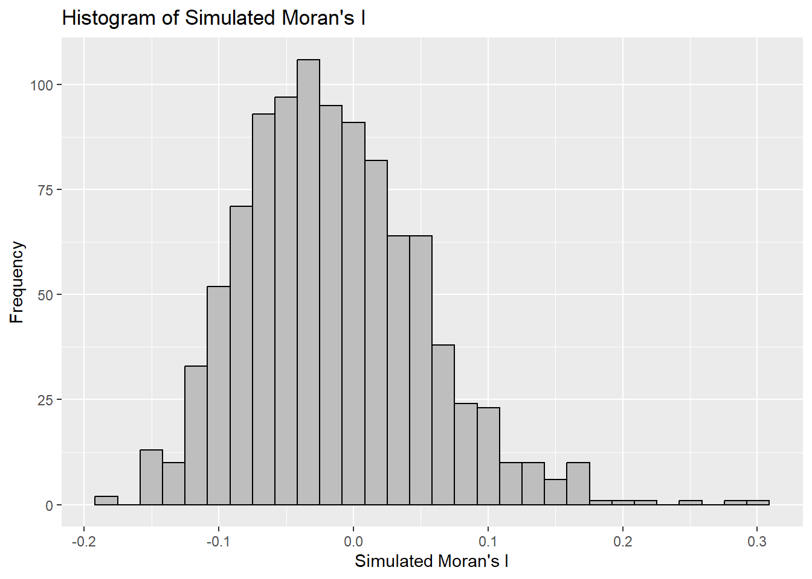

pacman::p_load(sf, spdep, tmap, tidyverse)Hands-on Exercise 7: Global Measures of Spatial Autocorrelation
1. OVERVIEW
This exercise will tackle Global Measures of Spatial Autocorrelation (GMSA) by using the spdep package.
By the end to this hands-on exercise, you will be able to:
import geospatial data using appropriate function(s) of sf package,
import csv file using appropriate function of readr package,
perform relational join using appropriate join function of dplyr package,
compute Global Spatial Autocorrelation (GSA) statistics by using appropriate functions of spdep package,
plot Moran scatterplots, and
compute and plot spatial correlograms using appropriate functions of the spdep package.
provide statistically correct interpretation of GSA statistics.
2. GETTING STARTED
2.1 Objective - The Analytical Question
In spatial policy, a key development goal for local governments and planners is to ensure an equal distribution of development across the province.
The objective of this study is to apply appropriate spatial statistical methods to determine whether development is distributed geographically. If it is not, the next step is to investigate whether there is evidence of spatial clustering. If clustering is present, we will then seek to identify the locations of these clusters.
In this case study, we focus on analyzing the spatial pattern of a specific development indicator—GDP per capita—in Hunan Province, People’s Republic of China.
2.2 Study Area and Dataset
Two data sets will be used in this hands-on exercise, which are:
- Hunan Province Administrative Boundary Layer (at County Level). This is a geospatial data set in ESRI shapefile format.
- Hunan_2012.csv. This csv file contains selected Hunan’s local development indicators in 2012.
2.3 Setting the Analytical Tools
This code chunk uses p_load() of the pacman package (stands for Package Manager) to check if the following packages are installed:
sf: used for importing and handling geospatial data in R.
tidyverse: mainly used for wrangling attribute data in R.
spdep: used to compute spatial weights, global and local spatial autocorrelation statistics.
tmap: used to prepare cartographic quality chropleth map.
If available, the packages will then be launched into R.
3. GETTING THE DATA INTO R ENVIRONMENT
Datasets:
Hunan County Boundary Layer: geospatial data set in the ESRI shapefile format.
Hunan_2012.csv: aspatial data which contains selected Hunan’s local development indicators in 2012.
3.1 Importing shapefile into the R Environment
Let us use the sf package to import the Hunan shapefile into R.
The output is a simple features sf object.
hunan <- st_read(dsn = "data/geospatial",
layer = "Hunan")Reading layer `Hunan' from data source
`C:\loriellemalveda\ISSS626-GAA\Hands-on_Ex\Hands-on_Ex07\data\geospatial'
using driver `ESRI Shapefile'
Simple feature collection with 88 features and 7 fields
Geometry type: POLYGON
Dimension: XY
Bounding box: xmin: 108.7831 ymin: 24.6342 xmax: 114.2544 ymax: 30.12812
Geodetic CRS: WGS 843.2 Importing csv into the R Environment
Next, we will import Hunan_2012.csv into R by using the read_csv function of the readr package.
The output is R dataframe class.
hunan2012 <- read_csv("data/aspatial/Hunan_2012.csv")3.3 Performing Relational Join
The following code chunk updates the attribute table of the hunan SpatialPolygonsDataFrame by merging it with the attribute fields of the hunan2012 dataframe. This is accomplished using the left_join() function from the dplyr package:
hunan <- left_join(hunan,hunan2012) %>%
select(1:4, 7, 15)3.4 Visualizing the Regional Development Indicator
Next, we’ll prepare a basemap and a choropleth map to display the distribution of GDP per capita for 2012, using the qtm() function from the tmap package.
equal <- tm_shape(hunan) +
tm_fill("GDPPC",
n = 5,
style = "equal") +
tm_borders(alpha = 0.5) +
tm_layout(main.title = "Equal interval classification")
quantile <- tm_shape(hunan) +
tm_fill("GDPPC",
n = 5,
style = "quantile") +
tm_borders(alpha = 0.5) +
tm_layout(main.title = "Equal quantile classification")
tmap_arrange(equal,
quantile,
asp=1,
ncol=2)
4. GLOBAL MEASURES OF SPATIAL AUTOCORRELATION
In this section, you will learn how to compute global spatial autocorrelation statistics and to perform spatial complete randomness test for global spatial autocorrelation.
4.1 Computing Contiguity Spatial Weights
Before we can compute the global spatial autocorrelation statistics, we need to construct a spatial weights matrix for the study area. This matrix defines the neighborhood relationships between the geographical units (e.g., counties) in the study area.
In the code below, the poly2nb() function from the spdep package is used to compute contiguity weight matrices. This function creates a neighbors list based on regions that share contiguous boundaries. According to the documentation, you can specify the “queen” argument, which takes either TRUE or FALSE. If you do not specify this argument, the default is TRUE, meaning that the function will return a list of first-order neighbors based on the Queen contiguity criteria unless you explicitly set queen = FALSE.
The following code chunk specifically computes the Queen contiguity weight matrix.
wm_q <- poly2nb(hunan,
queen=TRUE)
summary(wm_q)Neighbour list object:
Number of regions: 88
Number of nonzero links: 448
Percentage nonzero weights: 5.785124
Average number of links: 5.090909
Link number distribution:
1 2 3 4 5 6 7 8 9 11
2 2 12 16 24 14 11 4 2 1
2 least connected regions:
30 65 with 1 link
1 most connected region:
85 with 11 linksThe summary report above shows that there are 88 area units in Hunan. The most connected area unit has 11 neighbors. There are two area units with only one neighbor.
4.2 Row-standardized Weights Matrix
Next, we need to assign weights to each neighboring polygon. In our case, we will assign equal weights to each neighboring polygon (style = “W”). This is done by assigning the fraction 1 / (# of neighbors) to each neighboring county and then summing the weighted values, such as income. While this method is intuitive, it has a potential drawback: polygons located at the edges of the study area will have fewer neighbors, which could lead to over- or under-estimating the true extent of spatial autocorrelation in the data.
For simplicity, we will use the style = “W” option in this example. However, it’s worth noting that other more robust options are available, such as style = “B”, which might address some of these limitations.
rswm_q <- nb2listw(wm_q,
style="W",
zero.policy = TRUE)
rswm_qCharacteristics of weights list object:
Neighbour list object:
Number of regions: 88
Number of nonzero links: 448
Percentage nonzero weights: 5.785124
Average number of links: 5.090909
Weights style: W
Weights constants summary:
n nn S0 S1 S2
W 88 7744 88 37.86334 365.9147The code chunk above demonstrates the use of the nb2listw() function, which converts a neighbors list object of class nb into a spatial weights list. There are two key arguments in this function: style and zero.policy.
The input of
nb2listw()must be an object of class nb. The syntax of the function has two major arguments, namely style and zero.poly.style can take values “W”, “B”, “C”, “U”, “minmax” and “S”. B is the basic binary coding, W is row standardised (sums over all links to n), C is globally standardised (sums over all links to n), U is equal to C divided by the number of neighbours (sums over all links to unity), while S is the variance-stabilizing coding scheme proposed by Tiefelsdorf et al. 1999, p. 167-168 (sums over all links to n).
If zero policy is set to TRUE, weights vectors of zero length are inserted for regions without neighbour in the neighbours list. These will in turn generate lag values of zero, equivalent to the sum of products of the zero row t(rep(0, length=length(neighbours))) %*% x, for arbitrary numerical vector x of length length(neighbours). The spatially lagged value of x for the zero-neighbour region will then be zero, which may (or may not) be a sensible choice.
5. GLOBAL MEASURES OF SPATIAL AUTOCORRELATION: MORAN’S I
In this section, you will learn how to perform Moran’s I statistics testing by using moran.test() of spdep.
5.1 Maron’s I Test
moran.test(hunan$GDPPC,
listw=rswm_q,
zero.policy = TRUE,
na.action=na.omit)
Moran I test under randomisation
data: hunan$GDPPC
weights: rswm_q
Moran I statistic standard deviate = 4.7351, p-value = 1.095e-06
alternative hypothesis: greater
sample estimates:
Moran I statistic Expectation Variance
0.300749970 -0.011494253 0.004348351 Since the Moran I Statistic is at ~0,300, we can say that it has positive weak autocorrelation. Meaning values of the GDPPC are clustered together, whether high or low, geographically speaking.
Since the p-value is less than 0.05, we have statistical evidence to reject the null hypothesis. Meaning, there is strong evidence of spatial autocorrelation in the GDPPC data for the Hunan province.
5.2 Computing Monte Carlo Moran’s I
The code chunk below performs permutation test for Moran’s I statistic by using moran.mc() of spdep. A total of 1000 simulations (999+1) will be performed.
set.seed(1234)
bperm= moran.mc(hunan$GDPPC,
listw=rswm_q,
nsim=999,
zero.policy = TRUE,
na.action=na.omit)
bperm
Monte-Carlo simulation of Moran I
data: hunan$GDPPC
weights: rswm_q
number of simulations + 1: 1000
statistic = 0.30075, observed rank = 1000, p-value = 0.001
alternative hypothesis: greaterA p-value of 0.001 indicates strong evidence against the null hypothesis, suggesting that the observed spatial pattern is very unlikely to have occurred by chance (spatial randomness).
There is significant positive spatial autocorrelation in GDPPC, and this autocorrelation is not likely to be due to spatial randomness. The significant Moran’s I value, supported by the high rank and low p-value in the Monte-Carlo simulation, strongly suggests that similar economic conditions are geographically clustered in the province.
5.3 Visualizing Monte Carlo Moran’s I
It is always a good practice for us the examine the simulated Moran’s I test statistics in greater detail. This can be achieved by plotting the distribution of the statistical values as a histogram by using the code chunk below.
In the code chunk below hist() and abline() of R Graphics are used.
mean(bperm$res[1:999])[1] -0.01504572var(bperm$res[1:999])[1] 0.004371574summary(bperm$res[1:999]) Min. 1st Qu. Median Mean 3rd Qu. Max.
-0.18339 -0.06168 -0.02125 -0.01505 0.02611 0.27593 hist(bperm$res,
freq=TRUE,
breaks=20,
xlab="Simulated Moran's I")
abline(v=0,
col="red") 
The histogram shows the distribution of the Monte Carlo Simulation results. It looks somehow normally distributed but also a bit right-skewed.
Challenge:
USING GGPLOT - need to convert to dataframe first to use the ggplot package.
str(bperm)List of 7
$ statistic : Named num 0.301
..- attr(*, "names")= chr "statistic"
$ parameter : Named num 1000
..- attr(*, "names")= chr "observed rank"
$ p.value : num 0.001
$ alternative: chr "greater"
$ method : chr "Monte-Carlo simulation of Moran I"
$ data.name : chr "hunan$GDPPC \nweights: rswm_q \nnumber of simulations + 1: 1000 \n"
$ res : num [1:1000] 0.05798 0.09954 0.06943 -0.10422 0.00381 ...
- attr(*, "class")= chr [1:2] "htest" "mc.sim"data_for_plot <- data.frame(bperm$res)
ggplot(data = data_for_plot, aes(x = bperm.res)) +
geom_histogram(bins = 30, fill = "grey", color = "black") +
labs(title = "Histogram of Simulated Moran's I",
x = "Simulated Moran's I",
y = "Frequency")
6. GLOBAL MEASURES OF SPATIAL AUTOCORRELATION: GEARY’S C
In this section, you will learn how to perform Geary’s C statistics testing by using appropriate functions of the spdep package.
6.1 Geary’s C Test
The code chunk below performs Geary’s C test for spatial autocorrelation by using geary.test() of spdep.
geary.test(hunan$GDPPC, listw=rswm_q)
Geary C test under randomisation
data: hunan$GDPPC
weights: rswm_q
Geary C statistic standard deviate = 3.6108, p-value = 0.0001526
alternative hypothesis: Expectation greater than statistic
sample estimates:
Geary C statistic Expectation Variance
0.6907223 1.0000000 0.0073364 The statistic is less than 1, which means there is positive spatial autocorrelation. This indicates that neighboring areas tend to have similar GDPPC values more than would be expected if the spatial distribution were random.
The p-value is extremely low, which provides strong evidence against the null hypothesis of no spatial autocorrelation. It indicates that the probability of observing a Geary C statistic as extreme as 0.6907223 under the null hypothesis is very small (about 0.01526%).
6.2 Computing Monte Carlo Geary’s C
The code chunk below performs permutation test for Geary’s C statistic by using geary.mc() of spdep.
set.seed(1234)
bperm=geary.mc(hunan$GDPPC,
listw=rswm_q,
nsim=999)
bperm
Monte-Carlo simulation of Geary C
data: hunan$GDPPC
weights: rswm_q
number of simulations + 1: 1000
statistic = 0.69072, observed rank = 1, p-value = 0.001
alternative hypothesis: greaterAccording to the simulation, there is significant positive spatial autocorrelation initially indicated by the test.
The p-value suggests there is evidence that the geographical distribution of GDPPC across Hunan Province is not random but exhibits significant spatial clustering, where economically similar regions are close to each other.
6.3 Visualizing the Monte Carlo Geary’s C
Next, we will plot a histogram to reveal the distribution of the simulated values by using the code chunk below.
mean(bperm$res[1:999])[1] 1.004402var(bperm$res[1:999])[1] 0.007436493summary(bperm$res[1:999]) Min. 1st Qu. Median Mean 3rd Qu. Max.
0.7142 0.9502 1.0052 1.0044 1.0595 1.2722 hist(bperm$res, freq=TRUE, breaks=20, xlab="Simulated Geary c")
abline(v=1, col="red") 
Question: What statistical observation can you draw from the output?
Same was the output for Moran’s I. Slightly right-skewed but overall resembles a normal distribution (bell curve).
7. SPATIAL CORRELOGRAM
Spatial Correlograms are tools for analyzing patterns of spatial autocorrelation in data or model residuals. They illustrate the relationship between the correlation of spatial data pairs and the increasing distance or lag between them, plotting an index of autocorrelation, such as Moran’s I or Geary’s C, against distance.
While not as foundational as variograms, which are central to geostatistics, spatial correlograms serve as valuable exploratory and descriptive tools. In fact, they often offer more detailed information than variograms for these purposes.
7.1 Compute Moran’s I correlogram
In the code chunk below, sp.correlogram() of the spdep package is used to compute a 6-lag spatial correlogram of GDPPC. The global spatial autocorrelation used is Moran’s I.
The plot() of base Graph is then used to plot the output.
MI_corr <- sp.correlogram(wm_q,
hunan$GDPPC,
order=6,
method="I",
style="W")
plot(MI_corr)
Plotting the output might not allow us to provide complete interpretation. This is because not all autocorrelation values are statistically significant. Hence, it is important for us to examine the full analysis report by printing out the analysis results as in the code chunk below.
print(MI_corr)Spatial correlogram for hunan$GDPPC
method: Moran's I
estimate expectation variance standard deviate Pr(I) two sided
1 (88) 0.3007500 -0.0114943 0.0043484 4.7351 2.189e-06 ***
2 (88) 0.2060084 -0.0114943 0.0020962 4.7505 2.029e-06 ***
3 (88) 0.0668273 -0.0114943 0.0014602 2.0496 0.040400 *
4 (88) 0.0299470 -0.0114943 0.0011717 1.2107 0.226015
5 (88) -0.1530471 -0.0114943 0.0012440 -4.0134 5.984e-05 ***
6 (88) -0.1187070 -0.0114943 0.0016791 -2.6164 0.008886 **
---
Signif. codes: 0 '***' 0.001 '**' 0.01 '*' 0.05 '.' 0.1 ' ' 1The significant positive autocorrelation at closer lags suggests that economic conditions or policies might have effects that diminish with distance, and planning or interventions might need to consider these local spatial dependencies to be effective.
7.2 Compute Geary’s C Correlogram and Plot
In the code chunk below, sp.correlogram() of spdep package is used to compute a 6-lag spatial correlogram of GDPPC. The global spatial autocorrelation used in Geary’s C. The plot() of base Graph is then used to plot the output.
GC_corr <- sp.correlogram(wm_q,
hunan$GDPPC,
order=6,
method="C",
style="W")
plot(GC_corr)
Similar to the previous step, we will print out the analysis report by using the code chunk below.
print(GC_corr)Spatial correlogram for hunan$GDPPC
method: Geary's C
estimate expectation variance standard deviate Pr(I) two sided
1 (88) 0.6907223 1.0000000 0.0073364 -3.6108 0.0003052 ***
2 (88) 0.7630197 1.0000000 0.0049126 -3.3811 0.0007220 ***
3 (88) 0.9397299 1.0000000 0.0049005 -0.8610 0.3892612
4 (88) 1.0098462 1.0000000 0.0039631 0.1564 0.8757128
5 (88) 1.2008204 1.0000000 0.0035568 3.3673 0.0007592 ***
6 (88) 1.0773386 1.0000000 0.0058042 1.0151 0.3100407
---
Signif. codes: 0 '***' 0.001 '**' 0.01 '*' 0.05 '.' 0.1 ' ' 1